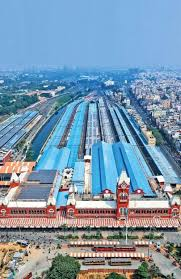

Chennai Central railway station
Tracks 17

Connections MTC, Suburban Rail, MRTS, Dr. M.G.R. Chennai Central Metro.
Maintenance
- According to the Railway sources, as of July 2012
- Contracts for cleaning the station has been awarded for a period of three years from 2010
- The rest of the trains go through secondary maintenance or 'other-end attention' at the depot or 'turn back train attention' at Chennai Central itself.
Railway sources
Google
map link